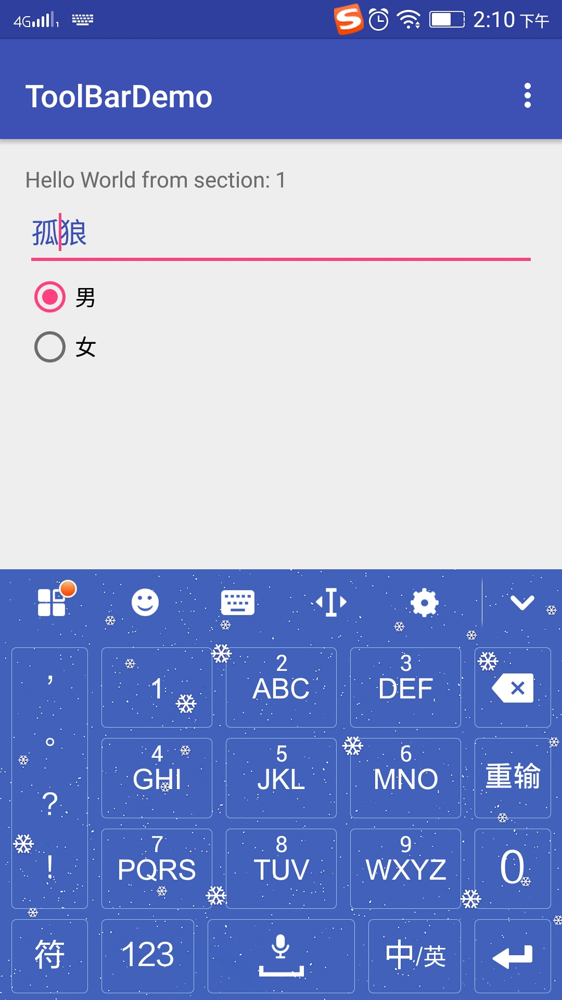
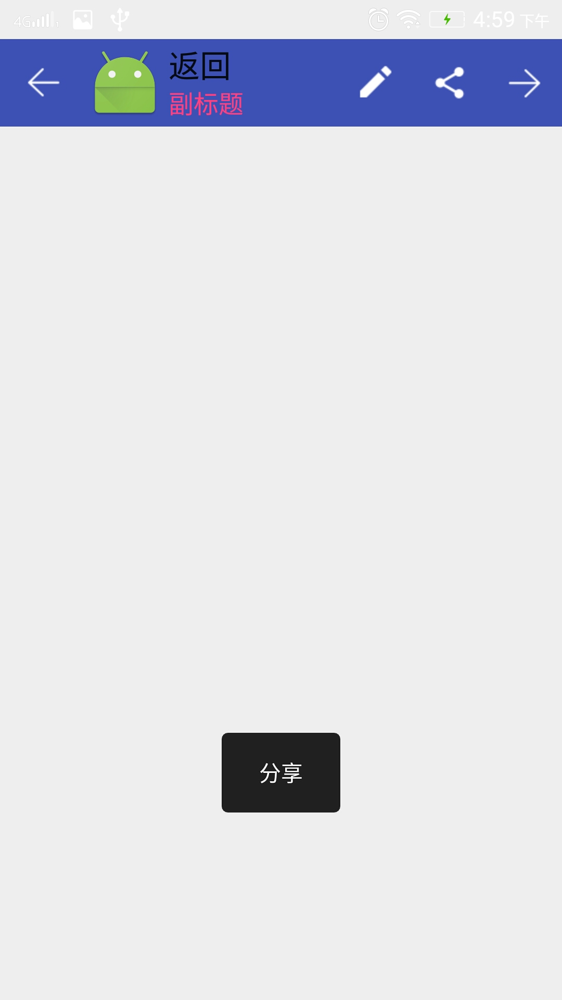

Android Material Design之Theme和ToolBar
Author: 孤狼
中文网站：Material
Design中文
官方网站：Material
Design英文
Android 3.0 Android 推了 ActionBar 这个控件，而到了2013 年 Google 开始大力地推动所谓的
android style，想要逐渐改善过去 android 纷乱的界面设计，希望让终端使用者尽可能在 android
手机有个一致的操作体验。ActionBar 过去最多人使用的两大套件就是 ActionBarSherlock 以及官方提供在
support library v7 里的 AppCompat。
官方在某些程度上认为 ActionBar 限制了 android app 的开发与设计的弹性，而在 material design
也对之做了名称的定义：App bar。
一、Material Design的Theme
md的主题有：
- @android:style/Theme.Material (dark version)
- @android:style/Theme.Material.Light (light version)
- @android:style/Theme.Material.Light.DarkActionBar
与之对应的Compat Theme:
- Theme.AppCompat
- Theme.AppCompat.Light
- Theme.AppCompat.Light.DarkActionBar

|
 |
2.布局中使用
使用Toolbar,隐藏原本的ActionBar3.代码中设置
4.常用设置
//初始化Toolbar
Toolbar toolbar = (Toolbar) findViewById(R.id.toolbar);
//标题，注意：要设置在setSupportActionBar()之前
toolbar.setTitle("返回");
//Toolbar取代原本的 actionbar,
setSupportActionBar(toolbar);
//设置副标题
toolbar.setSubtitle("副标题");
//设置副标题颜色
toolbar.setSubtitleTextColor(getResources().getInteger(R.color.colorAccent));
//设置Logo
toolbar.setLogo(R.mipmap.ic_launcher);
//设置图标
toolbar.setNavigationIcon(R.mipmap.actionbar_back);
5.监听事件
//点击事件要设置在setSupportActionBar()之后
toolbar.setNavigationOnClickListener(new View.OnClickListener() {
@Override
public void onClick(View v) {
Toast.makeText(getApplicationContext(), R.string.action_back, Toast.LENGTH_LONG).show();
}
});
//设置点击事件
toolbar.setOnMenuItemClickListener(this);
//加载菜单的布局
@Override
public boolean onCreateOptionsMenu(Menu menu) {
getMenuInflater().inflate(R.menu.menu_main, menu);
return true;
}
/**
* 设置Toolbar头部item点击事件
*
* @param item
* @return
*/
@Override
public boolean onMenuItemClick(MenuItem item) {
int id = item.getItemId();
switch (id) {
case R.id.action_edit:
Toast.makeText(getApplicationContext(), R.string.action_edit, Toast.LENGTH_LONG).show();
break;
case R.id.action_share:
Toast.makeText(getApplicationContext(), R.string.action_share, Toast.LENGTH_LONG).show();
break;
case R.id.action_next:
Toast.makeText(getApplicationContext(), R.string.action_next, Toast.LENGTH_LONG).show();
break;
}
return true;
}
6.菜单布局
< menu xmlns:android="http://schemas.android.com/apk/res/android"
xmlns:app="http://schemas.android.com/apk/res-auto"
xmlns:tools="http://schemas.android.com/tools"
tools:context="gulang.toolbar.MainActivity" >
<item
android:id="@+id/action_edit"
android:icon="@mipmap/ab_edit"
android:orderInCategory="80"
android:title="@string/action_edit"
app:showAsAction="ifRoom" />
<item
android:id="@+id/action_share"
android:icon="@mipmap/ab_share"
android:orderInCategory="90"
android:title="@string/action_share"
app:showAsAction="ifRoom" />
<item
android:id="@+id/action_next"
android:orderInCategory="100"
android:icon="@mipmap/actionbar_next"
android:title="@string/action_next"
app:showAsAction="ifRoom" />
</menu>
7.运行效果
|  |
实例代码：Toolbar Demo